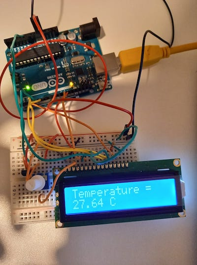

Displaying the temperature on LCD
Realization of a temperature sensor with the Arduino IDE. The sensor generates a different voltage depending on the temperature around him. This voltage is printed on an LCD screen after being converted in degree celsius.
The arduino UNO card was used for this project. Reading of the datasheet of the sensor to understand how to implement the code.
Description
Project finished
Less than a day
Team of 1 person
Technologies
C
Arduino IDE
Sensors
Share